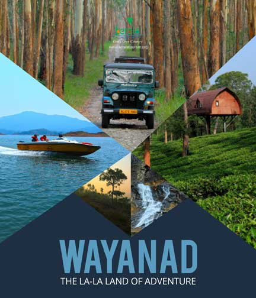
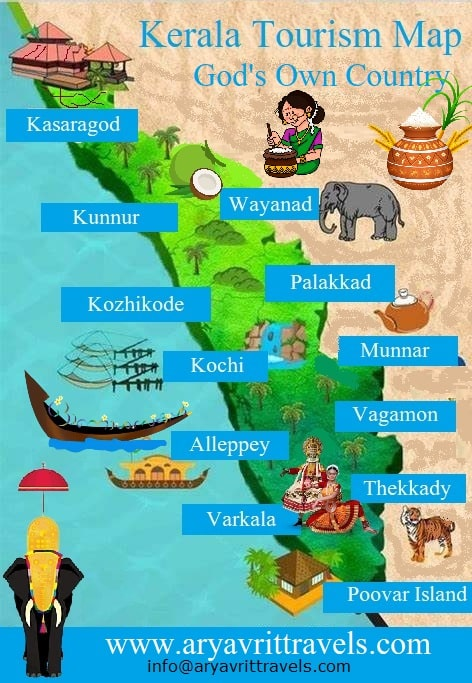

Top Destinations
Alappuzha

Alappuzha (or Alleppey) is a city on the Laccadive Sea in the southern Indian state of Kerala. It's best known for houseboat cruises along the rustic Kerala backwaters, a network of tranquil canals and lagoons. Alappuzha Beach is the site of the 19th-century Alappuzha Lighthouse. The city's Mullakkal Temple features a traditional design. Punnamada Lake's snake boat races are a well-known annual event
Wayanad

Wayanad is a rural district in Kerala state, southwest India. In the east, the Wayanad Wildlife Sanctuary is a lush, forested region with areas of high altitude, home to animals including Asiatic elephants, tigers, leopards and egrets. In the Ambukuthi Hills to the south, Edakkal Caves contain ancient petroglyphs, some dating back to the Neolithic age.
Munnar

Munnar is a town in the Western Ghats mountain range in India’s Kerala state. A hill station and former resort for the British Raj elite, it's surrounded by rolling hills dotted with tea plantations established in the late 19th century. Eravikulam National Park, a habitat for the endangered mountain goat Nilgiri tahr, is home to the Lakkam Waterfalls, hiking trails and 2,695m-tall Anamudi Peak
Idukki

Idukki district is a densely forested, mountainous region in the south Indian state of Kerala. In the north, Anamudi mountain towers over Eravikulam National Park, where the rare, blue Neelakurinji flower blooms every 12 years. Nearby, Munnar is a hill station known for its sprawling tea plantations and Tea Museum. Farther south is the vast, curved Idukki Dam and Periyar National Park, a tiger and elephant reserve
Abut Kerala

Kerala, a state situated on the tropical Malabar Coast of southwestern India, is one of the most popular tourist destinations in the country. Named as one of the ten paradises of the world by National Geographic Traveler, Kerala is famous especially for its ecotourism initiatives and beautiful backwaters. Its unique culture and traditions, coupled with its varied demography, have made Kerala one of the most popular tourist destinations in the world. Several international agencies ranging from UNESCO to National Geographic have recognised the state's tourism potential. Kerala was named by TIME magazine in 2022 among the 50 extraordinary destinations to explore in its list of the World's Greatest Places. In 2023, Kerala was listed at the 13th spot in The New York Times' annual list of places to visit and was the only tourist destination listed from India.